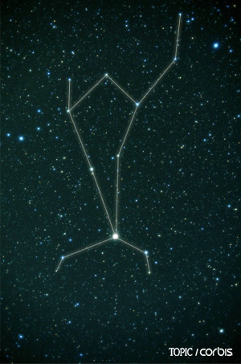

별자리도감
밤하늘의 별들을 무리 지어 연결하고 이름을 붙인 별자리는 고대인들의 상상력과 탐험의 역사에서 시작되었습니다. 현재 국제천문연맹(IAU)이 공인한 전 하늘의 공식 별자리는 총 88개입니다.
지구의 공전 운동 때문에 밤하늘에 보이는 별자리들은 계절에 따라 조금씩 변화하며, 각 계절을 대표하는 아름다운 길잡이 별들이 존재합니다.
봄철목동자리봄철 밤하늘에서 가장 밝게 빛나는 주황색 거성 '아크투르스'를 품고 있습니다. 그리스 신화에서는 어깨에 하늘을 짊어진 거인 아틀라스나 소를 모는 목동의 모습으로 그려집니다. |
 |
봄철사자자리봄을 알리는 황도 12궁 중 하나로, 서양식 물음표(?)를 뒤집어 놓은 듯한 사자의 머리 형태가 눈에 띕니다. 사자의 심장 위치에서 푸르스름하게 빛나는 1등성 '레굴루스'가 유명합니다. |
 |
봄철처녀자리하늘에서 두 번째로 면적이 넓은 거대한 별자리입니다. 보석처럼 아름다운 순백색의 빛을 발하는 1등성 '스피카'를 가지고 있으며, 정의의 여신 아스트라이아의 신화가 전해집니다. |
 |
여름철거문고자리은하수 서쪽 기슭에서 가장 화려하게 빛나는 푸른빛의 별 '베가(직녀성)'를 포함하고 있습니다. 거장 오르페우스가 연주하던 신비한 거문고 모양을 형상화한 작고 아름다운 별자리입니다. |
 |